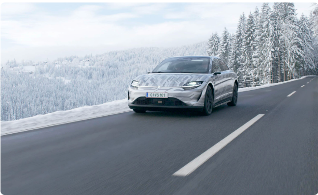
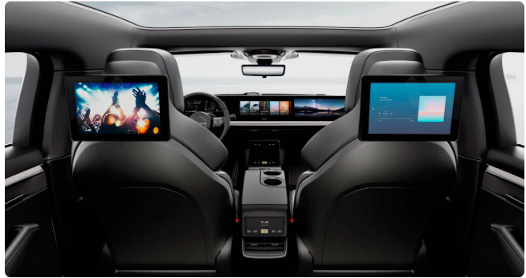
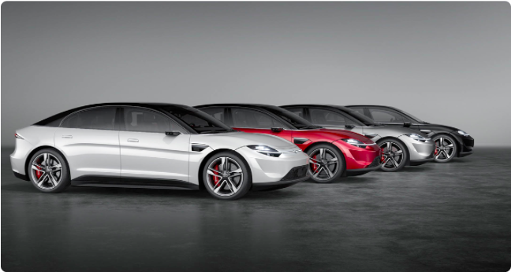
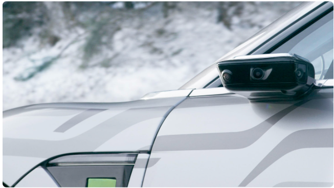
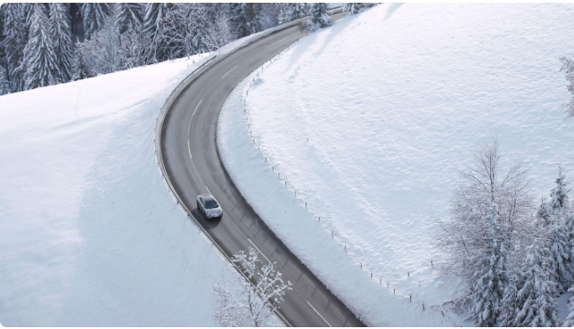

Sony отказалась производить собственный электрокар
Хотя недавно его выпустили на дорожные испытания в Европе.
Sony Vision-S. Источник: Sony
Компания Sony не планирует делать серийным электрокар Vision-S. Об этом сообщает издание Car and Driver. Соответствующее заявление сделал представитель Sony в интервью изданию. И это произошло на фоне масштабных дорожных испытаний Vision-S, которые сейчас проводятся в Европе.
Зачем нужен этот концепт-кар?
Сейчас мы не планируем серийно производить и продавать этот автомобиль. Мобильность, как ожидается, станет основной мегатенденцией будущего, поэтому мы изучаем, как Sony может внести вклад в развитие эпохи автономного вождения. Благодаря нашим сильным сторонам в области визуализации и распознавания мы стремимся внести свой вклад как в безопасность, так и в надёжность автономного вождения, а также предоставить мощный опыт использования развлечений в сфере мобильности
SonyЕсли рассматривать этот автомобиль как испытательный полигон для развлекательных технологий, то тут стоит вспомнить его аудиосистему пространственного звучания 360 RealityAudio. Она подстраивает звук под голову каждого конкретного пассажира так, что он слышит правильный звук.
Всё это может привести и к условной PlayStation 5G — игровой приставке с поддержкой сетей пятого поколения, которая может стать частью мультимедийной системы автомобиля.
Sony Vision-S использует 40 датчиков для работы системы автономного вождения. Четыре из них являются лидарами
Пока автомобиль получил автопилот второго уровня, при котором водителю нужно держать руки на руле и быть готов перенять управление на себя. Но Sony надеется обновить его до четвёртого уровня, где контроль со стороны водителя не нужен — он может лечь спать или сесть на пассажирское кресло в специально отведённых местах и пробках.

Sony Vision-S показали на CES
2020:
Автомобиль показали очень неожиданно и буквально в течение двух минут, никак
не комментируя произошедшее.